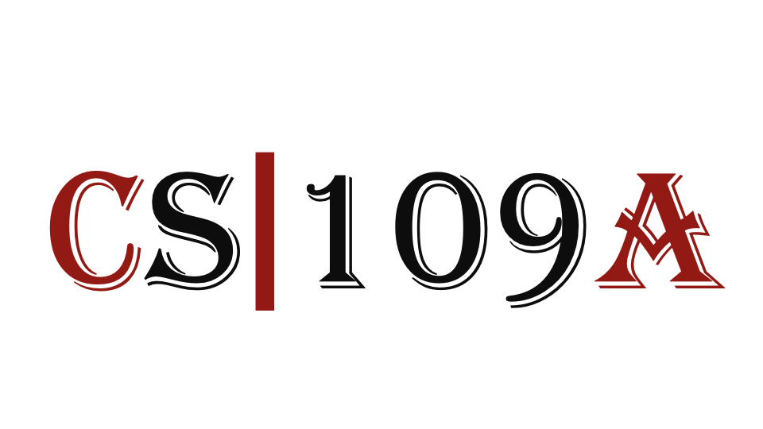
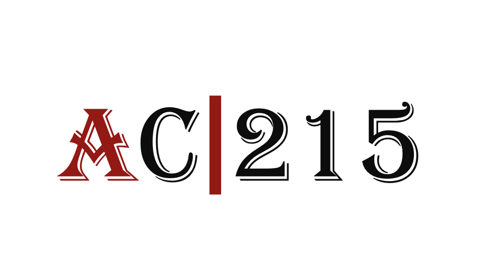
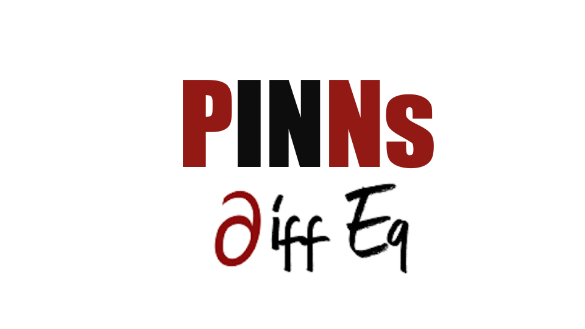
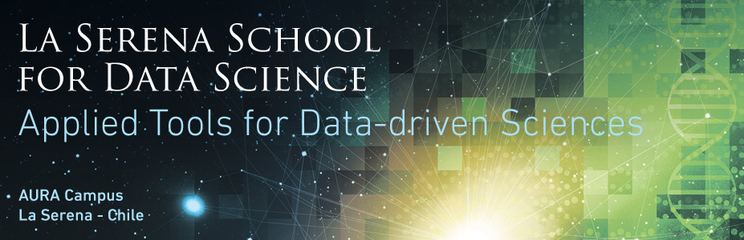

Courses
StellarDNN members help teach these courses. Harvard now lists CS109A/B as CS1090A/B. Current course information.
-

Introduction to Data Science
Harvard teaches this introductory course each fall. It covers data scraping and visualization, basic machine learning with decision trees and regression models for prediction, and statistical inference in regression.
- Collect data and wrangle, clean, and sample it to create a suitable dataset.
- Manage data so it is quick and reliable to access.
- Explore data to generate hypotheses and build intuition.
- Make predictions with statistical learning.
- Communicate results through visualizations, stories, and interpretable summaries.
-
Advanced Topics in Data Science
The second half of Harvard’s one-year data science sequence builds on Introduction to Data Science. It covers advanced methods for data wrangling, visualization, statistical modeling, and prediction.
Topics include big data, deep learning architectures such as CNNs, RNNs, language models, transformers, autoencoders, and generative models, as well as Bayesian modeling, sampling methods, and unsupervised learning.
-

Productionizing AI
The course covers the full machine learning operations workflow, with an emphasis on deploying large language models (LLMs). Topics include containerization, cloud functions, data pipelines, and advanced training techniques. Students use LLM APIs, fine-tune models for specific tasks, and build scalable, maintainable AI applications.
-
Bedrock Data Science
The course teaches the math, statistics, and programming needed to take a course in machine learning, data science, or AI.
- Basic Python, including data types, data structures, and functions
- Advanced Python and classes
- Probability and statistics
- Linear algebra and calculus
A version for high school students is offered through system3.
-

Physics-Informed Neural Networks
The course starts with differential equations and traditional numerical methods for solving them. It then covers neural network approaches, initial and boundary conditions, optimization methods, sampling, error characterization, and transfer learning.
Students compare the advantages and challenges of different PINN approaches, implement them, and use existing libraries to solve linear and nonlinear ordinary and partial differential equations, including systems.
Pavlos Protopapas co-authored Solving Differential Equations and Inverse Problems with AI (World Scientific, 2026).
HarvardX online courses
-
Introduction to Data Science with Python
This course covers regression, classification, and Python libraries such as
sklearnandPandas. It introduces overfitting, regularization, and model evaluation to prepare learners for further study in machine learning and AI. -
Machine Learning and AI with Python
This course focuses on decision-making with machine learning. It introduces decision trees and progresses to bagging, random forests, and gradient boosting. Learners work through real cases to make predictions, refine models, and address overfitting and bias.
-
Introduction to Neural Networks and Deep Learning with Python
Workshops and summer schools
-

La Serena School for Data Science
The La Serena School for Data Science (LSSDS) is an intensive 10-day program on big data analysis, especially for astronomy. Since 2013, the school has offered training in machine learning, cloud computing, and statistics, with interdisciplinary lectures and hands-on team projects using real data.
The program serves advanced undergraduates and early graduate students from the U.S., Chile, Ecuador, and other Latin American countries. As a regular faculty member, Pavlos Protopapas led machine learning instruction and mentored student projects.
-
HPE Group AI workshop
Pavlos Protopapas designed and delivered this live online course on sequential data and language models for five engineers at HPE Group, an engineering solutions provider based in Modena. The course covered recurrent neural networks, attention mechanisms, and transformer architecture, with nine lectures and nine hands-on labs over nine weeks.
-
Rwanda Data Science School
The intensive three-week program introduced fundamental data science concepts. As one of two lead faculty members, Pavlos Protopapas helped develop and teach the curriculum to approximately 50 participants.
With three lectures per week and hands-on exercises, participants practiced data analysis and visualization using data scraping and basic machine learning models.
Teaching portfolio
The PDF with the full list of teaching activities is unavailable.